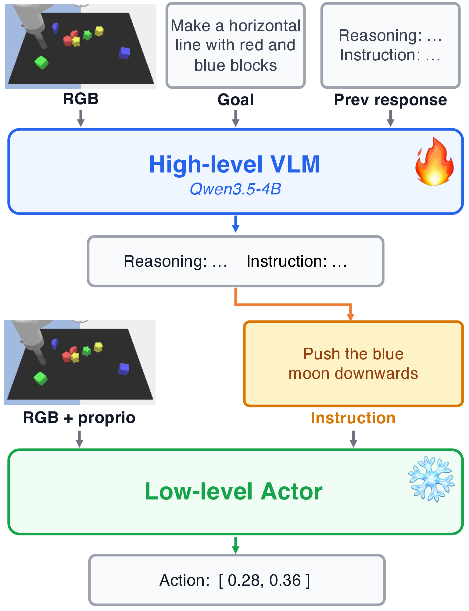
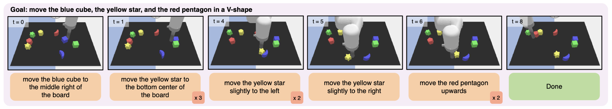
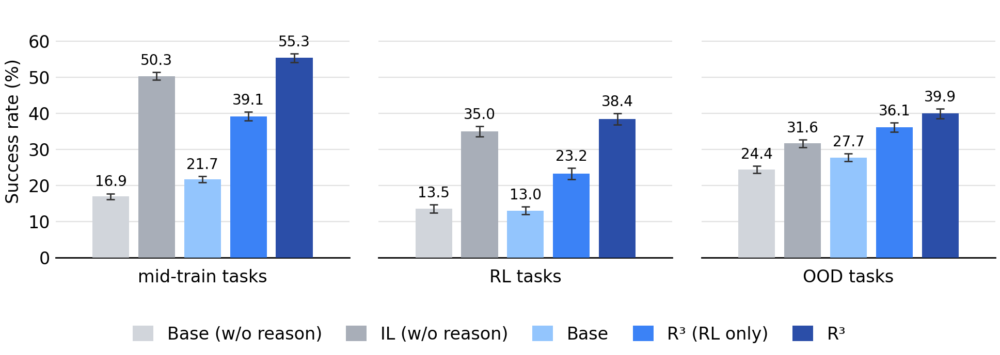
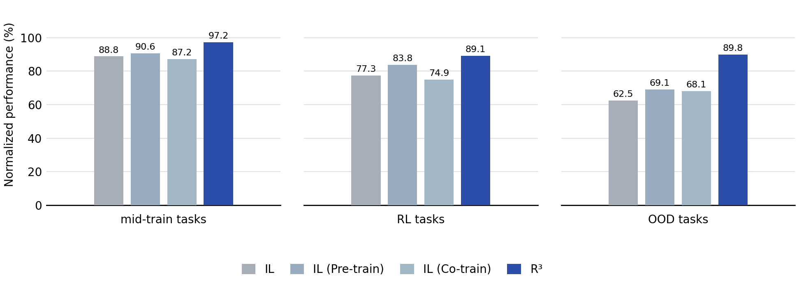
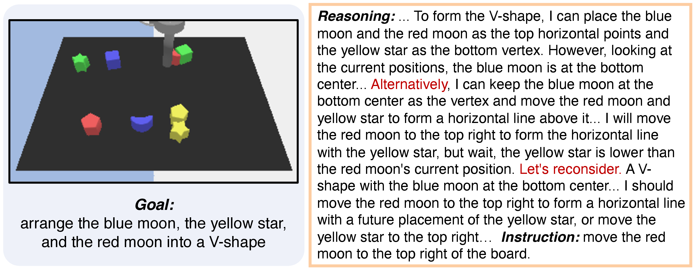
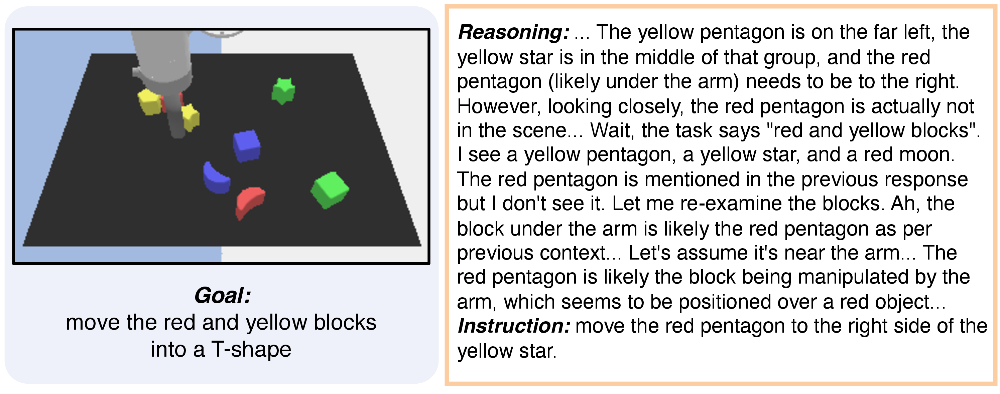
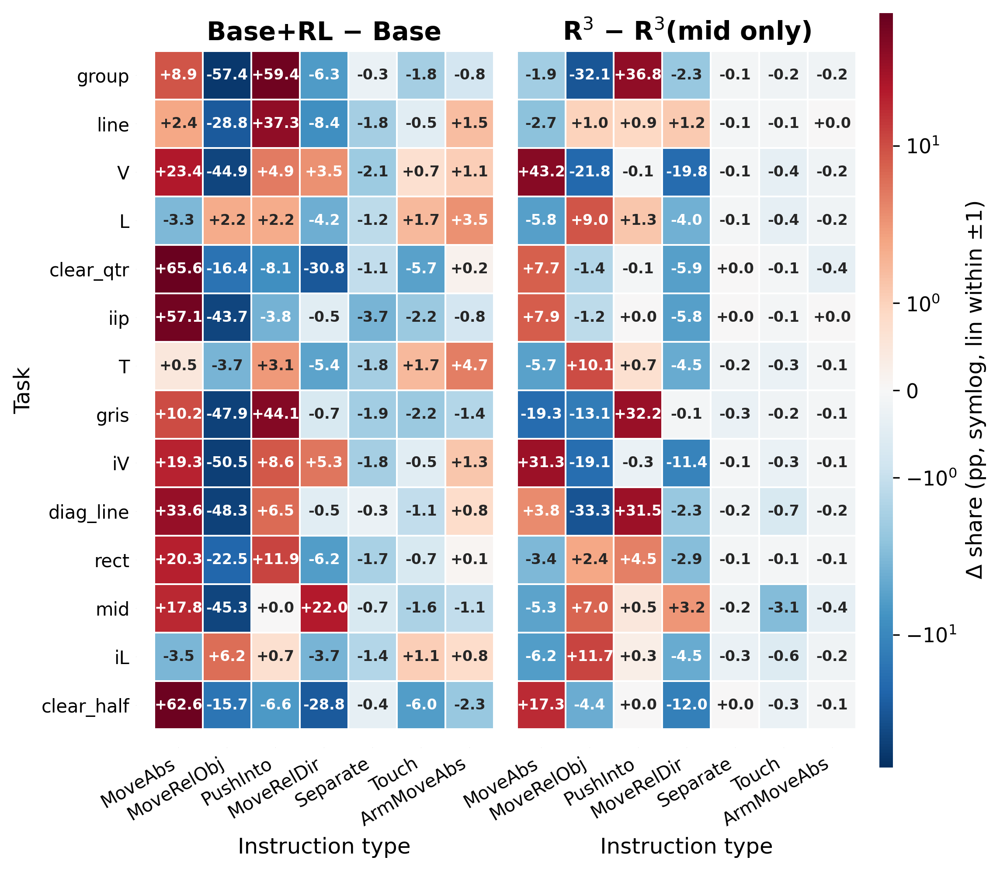
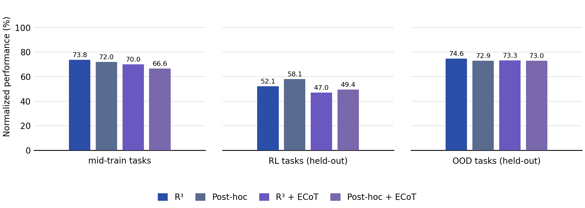

Abstract
Reasoning in language allows foundation models to spend more test-time compute on hard problems, such as those requiring decomposition, constraint tracking, and prediction of future consequences. Whether this mechanism can improve robotic manipulation remains unclear, where long-horizon tasks require tracking partial progress, reasoning about object relations, recovering from mistakes, and steering noisy low-level policies. In this paper, we study whether VLMs can be trained to reason directly in natural language to guide low-level manipulation policies. We introduce R³, a simple post-training recipe that turns off-the-shelf VLMs into robotic reasoners: it first mid-trains a VLM on expert-generated reasoning traces to initialize the desired reasoning style, then improves the reasoner with single-step rubric-based RL from offline action data. Unlike prior robotic reasoning methods that mostly use structured traces as auxiliary supervision, R³ trains free-form language reasoning to produce test-time guidance for action. We instantiate R³ on Language Table, a controlled testbed for studying robotic reasoning, and find that it improves exploration and generalization across unseen tasks. These results suggest that free-form language reasoning can function as a test-time compute mechanism for steering low-level policies.
R³: Robotic Reasoners via Reinforcement Learning
Hierarchical Policy for Long-Horizon Manipulation
To train reasoners for robotic manipulation, we use a hierarchical architecture: a low-level policy controls the robot, while a high-level VLM provides language instruction that steers this policy. With expert trajectories, our goal is to train the high-level VLM to reason in natural language before issuing this instruction.

We instantiate this setup on Language Table. We design 14 types of long-horizon block-arrangement tasks in Language Table that require composing object movements and reasoning about spatial relationships. The task suite is designed to test relational transfer, compositional generalization, and increasing geometric difficulty.

Two-stage Training Framework of R³
R³ turns expert manipulation demonstrations into practical training signal for reasoning in two stages: mid-training initializes the desired reasoning style, and rubric-based RL further improves the reasoner from offline action data.
Stage I: Mid-training
Off-the-shelf VLMs often do not produce the reasoning style needed for manipulation. Stage I mid-trains the VLM on expert-generated reasoning traces so it learns to reason about the state and interaction history before emitting an instruction.
- Data: expert demonstrations with reasoning labels
- Objective: next-token prediction loss
Stage II: Rubric-based Single-step RL
Mid-training alone does not ensure that test-time reasoning produces effective instructions. Stage II improves the reasoner with single-step RL on offline instruction data, without requiring expert reasoning traces or multi-turn robot rollouts. A frozen VLM judge scores whether the predicted instruction semantically matches the expert instruction under a rubric.
- Data: expert demonstrations without reasoning labels
- Objective: Dr.GRPO
- Reward: A frozen VLM judge guided by a rubric provides reward for each predicted instruction. The rubric evaluates whether the predicted instruction aligns with the expert’s, is feasible for the low-level policy, and would lead to a similar outcome.
Experimental Evaluation
Main Results
- RL alone improves performance. Rubric-based RL can reinforce useful reasoning behaviors and improve task performance even without mid-training.
- Mid-training improves RL post-training. Mid-training is a strong warm start; a modest amount of reasoning data is enough, especially for OOD generalization.
- R³ enables better OOD generalization than non-reasoning imitation. R³ matches or beats instruction-only imitation learning baselines on seen tasks, and generalizes much better to held-out tasks.

Reasoning Helps Beyond Better Representations
Takeaway: Explicit inference-time reasoning improves generalization beyond what is achieved by using reasoning only as a training-time supervision signal.
- Evidence A: R³ improves both static perception and action understanding, but these improvements alone does not explain its manipulation gains.
- Evidence B: R³ outperforms non-reasoning policies that use reasoning as training-time supervision, especially on OOD tasks.

Understanding Reasoning Behaviors Learned by R³
- R³ learns reasoning strategies that are useful for long-horizon manipulation: comparing alternatives, self-correction, and resolving visual or historical uncertainty.


- Mid-training largely aligns the model’s instruction distribution with the expert’s, providing a strong behavioral prior before RL. With mid-training as a warm start, RL refines an already reasonable behavior distribution rather than rediscovering behaviors from scratch.

Comparison with Embodied Chain-of-Thought (ECoT)
We adapt ECoT to our hierarchical setting by augmenting the response with explicit simulator-state annotations. Our results show that adding ECoT-style structured state annotations generally does not help over free-form language reasoning in our setting.

Examples of Evaluation Rollouts
Here we show 2 successful evaluation rollouts for each of the 14 Language Table tasks.
BibTeX
@misc{wu2026r3roboticreasoners,
title={R³: Training Robots to Reason in Natural Language via Reinforcement Learning},
author={Lehong Wu and Yuxiao Qu and Zheyuan Hu and Ivan Zhang and Limin Wei and Zackory Erickson and Aviral Kumar},
year={2026},
}